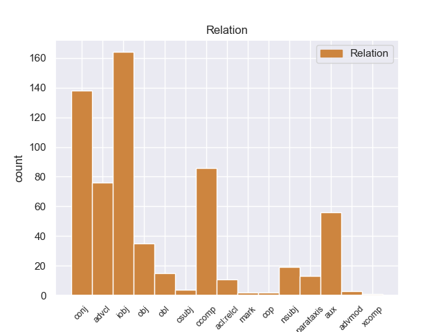
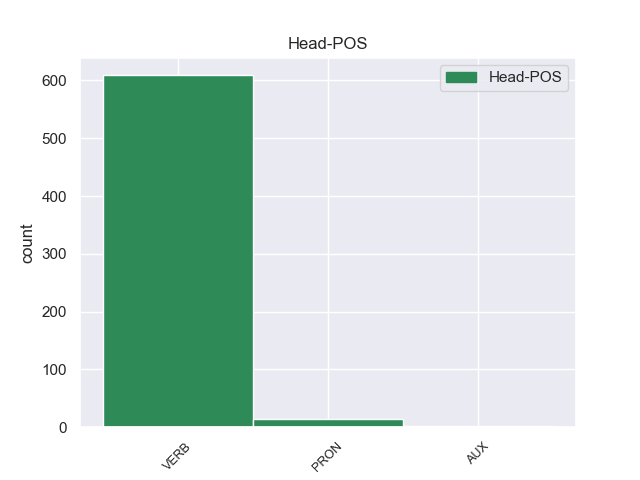

Distribution of features within this leaf



Agreement Rules sorted by frequency.
When the head token is VERB
1 Μια _ _ _ _ 0 _ _ _
2 δημόσια _ _ _ _ 0 _ _ _
3 σύμβαση _ _ _ _ 0 _ _ _
4 δεν _ _ _ _ 0 _ _ _
5 μπορεί poρείr AUX _ Mood=Ind|Number=Sing|Person=3|Tense=Pres|VerbForm=Fin 7 aux _ _
6 να _ _ _ _ 0 _ _ _
7 περιλαμβάνει περιλαμβάνειr VERB _ Mood=Ind|Number=Sing|Person=3|Tense=Pres|VerbForm=Fin 0 _ _ _
8 την _ _ _ _ 0 _ _ _
9 απαίτηση _ _ _ _ 0 _ _ _
10 από _ _ _ _ 0 _ _ _
11 τους _ _ _ _ 0 _ _ _
12 κατασκευαστές _ _ _ _ 0 _ _ _
13 λεωφορείων _ _ _ _ 0 _ _ _
14 να _ _ _ _ 0 _ _ _
15 κάνουν _ _ _ _ 0 _ _ _
16 περιβαλλοντική _ _ _ _ 0 _ _ _
17 εκτίμηση _ _ _ _ 0 _ _ _
18 για _ _ _ _ 0 _ _ _
19 το _ _ _ _ 0 _ _ _
20 Ελσίνκι _ _ _ _ 0 _ _ _
21 πριν _ _ _ _ 0 _ _ _
22 να _ _ _ _ 0 _ _ _
23 υποβάλλουν _ _ _ _ 0 _ _ _
24 τη _ _ _ _ 0 _ _ _
25 σύμβαση _ _ _ _ 0 _ _ _
26 . _ _ _ _ 0 _ _ _
When the head token is VERB and the head token is PRON
1 Εάν _ _ _ _ 0 _ _ _
2 αποφασίσουμε _ _ _ _ 0 _ _ _
3 ότι _ _ _ _ 0 _ _ _
4 ναι _ _ _ _ 0 _ _ _
5 μεν _ _ _ _ 0 _ _ _
6 θα _ _ _ _ 0 _ _ _
7 πρέπει _ _ _ _ 0 _ _ _
8 να _ _ _ _ 0 _ _ _
9 εκπαιδεύεται _ _ _ _ 0 _ _ _
10 κάθε _ _ _ _ 0 _ _ _
11 οδηγός _ _ _ _ 0 _ _ _
12 , _ _ _ _ 0 _ _ _
13 όμως _ _ _ _ 0 _ _ _
14 αυτό _ _ _ _ 0 _ _ _
15 θα _ _ _ _ 0 _ _ _
16 πρέπει _ _ _ _ 0 _ _ _
17 να _ _ _ _ 0 _ _ _
18 γίνεται _ _ _ _ 0 _ _ _
19 σύμφωνα _ _ _ _ 0 _ _ _
20 με _ _ _ _ 0 _ _ _
21 τις _ _ _ _ 0 _ _ _
22 εθνικές _ _ _ _ 0 _ _ _
23 προδιαγραφές _ _ _ _ 0 _ _ _
24 , _ _ _ _ 0 _ _ _
25 θα _ _ _ _ 0 _ _ _
26 ενισχύσουμε _ _ _ _ 0 _ _ _
27 τον _ _ _ _ 0 _ _ _
28 λεγόμενο _ _ _ _ 0 _ _ _
29 " _ _ _ _ 0 _ _ _
30 εκπαιδευτικό _ _ _ _ 0 _ _ _
31 τουρισμό _ _ _ _ 0 _ _ _
32 " _ _ _ _ 0 _ _ _
33 , _ _ _ _ 0 _ _ _
34 ακριβώς _ _ _ _ 0 _ _ _
35 αυτό αυτό PRON _ Case=Acc|Gender=Masc|Number=Sing|Person=3|PrepCase=Npr|PronType=Prs 0 _ _ _
36 που _ _ _ _ 0 _ _ _
37 δεν _ _ _ _ 0 _ _ _
38 θέλουμε θέλοer VERB _ Mood=Sub|Number=Plur|Person=3|Tense=Imp|VerbForm=Fin 35 acl:relcl _ _
39 να _ _ _ _ 0 _ _ _
40 συμβεί _ _ _ _ 0 _ _ _
41 . _ _ _ _ 0 _ _ _
When the head token is VERB and the head token is PRON and the head token is AUX
1 El _ _ _ _ 0 _ _ _
2 municipio _ _ _ _ 0 _ _ _
3 de _ _ _ _ 0 _ _ _
4 Tequixquiac _ _ _ _ 0 _ _ _
5 está _ _ _ _ 0 _ _ _
6 considerado _ _ _ _ 0 _ _ _
7 como _ _ _ _ 0 _ _ _
8 uno _ _ _ _ 0 _ _ _
9 de _ _ _ _ 0 _ _ _
10 más _ _ _ _ 0 _ _ _
11 pobres _ _ _ _ 0 _ _ _
12 de _ _ _ _ 0 _ _ _
13 la _ _ _ _ 0 _ _ _
14 región _ _ _ _ 0 _ _ _
15 de _ _ _ _ 0 _ _ _
16 Zumpango _ _ _ _ 0 _ _ _
17 , _ _ _ _ 0 _ _ _
18 esto _ _ _ _ 0 _ _ _
19 se _ _ _ _ 0 _ _ _
20 debe deber AUX _ Mood=Ind|Number=Sing|Person=3|Tense=Pres|VerbForm=Fin 0 _ _ _
21 a _ _ _ _ 0 _ _ _
22 que _ _ _ _ 0 _ _ _
23 las _ _ _ _ 0 _ _ _
24 actividades _ _ _ _ 0 _ _ _
25 sobresalientes _ _ _ _ 0 _ _ _
26 son ser VERB _ Mood=Ind|Number=Plur|Person=3|Tense=Pres|VerbForm=Fin 20 advcl _ _
27 de _ _ _ _ 0 _ _ _
28 el _ _ _ _ 0 _ _ _
29 sector _ _ _ _ 0 _ _ _
30 terciario _ _ _ _ 0 _ _ _
31 ( _ _ _ _ 0 _ _ _
32 agricultura _ _ _ _ 0 _ _ _
33 no _ _ _ _ 0 _ _ _
34 tecnificada _ _ _ _ 0 _ _ _
35 , _ _ _ _ 0 _ _ _
36 comercio _ _ _ _ 0 _ _ _
37 a _ _ _ _ 0 _ _ _
38 menor _ _ _ _ 0 _ _ _
39 escala _ _ _ _ 0 _ _ _
40 y _ _ _ _ 0 _ _ _
41 servicios _ _ _ _ 0 _ _ _
42 ) _ _ _ _ 0 _ _ _
43 . _ _ _ _ 0 _ _ _
Disagree Examples:
1 Cual _ _ _ _ 0 _ _ _
2 fue _ _ _ _ 0 _ _ _
3 mi _ _ _ _ 0 _ _ _
4 sorpresa _ _ _ _ 0 _ _ _
5 cuando _ _ _ _ 0 _ _ _
6 me yo PRON _ Case=Acc,Dat|Number=Sing|Person=1|PrepCase=Npr|PronType=Prs 7 iobj _ _
7 enseño enseño VERB _ Mood=Ind|Number=Sing|Person=3|Tense=Past|VerbForm=Fin 0 _ _ _
8 el _ _ _ _ 0 _ _ _
9 nervio _ _ _ _ 0 _ _ _
10 y _ _ _ _ 0 _ _ _
11 no _ _ _ _ 0 _ _ _
12 sentí _ _ _ _ 0 _ _ _
13 nada _ _ _ _ 0 _ _ _
14 , _ _ _ _ 0 _ _ _
15 ni _ _ _ _ 0 _ _ _
16 siquiera _ _ _ _ 0 _ _ _
17 el _ _ _ _ 0 _ _ _
18 pinchazo _ _ _ _ 0 _ _ _
19 de _ _ _ _ 0 _ _ _
20 la _ _ _ _ 0 _ _ _
21 anestesia _ _ _ _ 0 _ _ _
22 . _ _ _ _ 0 _ _ _
1 Una _ _ _ _ 0 _ _ _
2 taza _ _ _ _ 0 _ _ _
3 te tú PRON _ Case=Acc,Dat|Number=Sing|Person=2|PrepCase=Npr|PronType=Prs 4 iobj _ _
4 cuesta costar VERB _ Mood=Ind|Number=Sing|Person=3|Tense=Pres|VerbForm=Fin 0 _ _ _
5 5 _ _ _ _ 0 _ _ _
6 pesitos _ _ _ _ 0 _ _ _
7 . _ _ _ _ 0 _ _ _
1 La _ _ _ _ 0 _ _ _
2 riqueza _ _ _ _ 0 _ _ _
3 de _ _ _ _ 0 _ _ _
4 dichos _ _ _ _ 0 _ _ _
5 armónicos _ _ _ _ 0 _ _ _
6 , _ _ _ _ 0 _ _ _
7 producen _ _ _ _ 0 _ _ _
8 la _ _ _ _ 0 _ _ _
9 característica _ _ _ _ 0 _ _ _
10 tímbrica _ _ _ _ 0 _ _ _
11 de _ _ _ _ 0 _ _ _
12 cada _ _ _ _ 0 _ _ _
13 instrumento _ _ _ _ 0 _ _ _
14 y _ _ _ _ 0 _ _ _
15 es _ _ _ _ 0 _ _ _
16 ésta _ _ _ _ 0 _ _ _
17 la _ _ _ _ 0 _ _ _
18 que _ _ _ _ 0 _ _ _
19 nos yo PRON _ Case=Acc,Dat|Number=Plur|Person=1|PrepCase=Npr|PronType=Prs 20 obj _ _
20 ayuda ayudar VERB _ Mood=Ind|Number=Sing|Person=3|Tense=Pres|VerbForm=Fin 0 _ _ _
21 a _ _ _ _ 0 _ _ _
22 reconocer _ _ _ _ 0 _ _ _
23 los _ _ _ _ 0 _ _ _
24 distintos _ _ _ _ 0 _ _ _
25 instrumentos _ _ _ _ 0 _ _ _
26 musicales _ _ _ _ 0 _ _ _
27 . _ _ _ _ 0 _ _ _
1 Todos _ _ _ _ 0 _ _ _
2 los _ _ _ _ 0 _ _ _
3 comienzos _ _ _ _ 0 _ _ _
4 son _ _ _ _ 0 _ _ _
5 difíciles _ _ _ _ 0 _ _ _
6 , _ _ _ _ 0 _ _ _
7 pero _ _ _ _ 0 _ _ _
8 poco _ _ _ _ 0 _ _ _
9 a _ _ _ _ 0 _ _ _
10 poco _ _ _ _ 0 _ _ _
11 lo él PRON _ Case=Acc|Gender=Masc|Number=Sing|Person=3|PrepCase=Npr|PronType=Prs 12 obj _ _
12 coseguirás coseguirás VERB _ Mood=Ind|Number=Sing|Person=1|Tense=Pres|VerbForm=Fin 0 _ _ _
13 . _ _ _ _ 0 _ _ _
1 Después _ _ _ _ 0 _ _ _
2 de _ _ _ _ 0 _ _ _
3 un _ _ _ _ 0 _ _ _
4 detenido _ _ _ _ 0 _ _ _
5 análisis _ _ _ _ 0 _ _ _
6 pienso pensar VERB _ Mood=Ind|Number=Sing|Person=1|Tense=Pres|VerbForm=Fin 0 _ _ _
7 que _ _ _ _ 0 _ _ _
8 el _ _ _ _ 0 _ _ _
9 problema _ _ _ _ 0 _ _ _
10 está estar VERB _ Mood=Ind|Number=Sing|Person=3|Tense=Pres|VerbForm=Fin 6 ccomp _ _
11 en _ _ _ _ 0 _ _ _
12 la _ _ _ _ 0 _ _ _
13 imagen _ _ _ _ 0 _ _ _
14 que _ _ _ _ 0 _ _ _
15 tenemos _ _ _ _ 0 _ _ _
16 de _ _ _ _ 0 _ _ _
17 el _ _ _ _ 0 _ _ _
18 sindicalista _ _ _ _ 0 _ _ _
19 : _ _ _ _ 0 _ _ _
20 hombre _ _ _ _ 0 _ _ _
21 rudo _ _ _ _ 0 _ _ _
22 , _ _ _ _ 0 _ _ _
23 más _ _ _ _ 0 _ _ _
24 bien _ _ _ _ 0 _ _ _
25 desaliñado _ _ _ _ 0 _ _ _
26 , _ _ _ _ 0 _ _ _
27 que _ _ _ _ 0 _ _ _
28 se _ _ _ _ 0 _ _ _
29 echa _ _ _ _ 0 _ _ _
30 a _ _ _ _ 0 _ _ _
31 la _ _ _ _ 0 _ _ _
32 calle _ _ _ _ 0 _ _ _
33 con _ _ _ _ 0 _ _ _
34 una _ _ _ _ 0 _ _ _
35 pancarta _ _ _ _ 0 _ _ _
36 y _ _ _ _ 0 _ _ _
37 pega _ _ _ _ 0 _ _ _
38 " _ _ _ _ 0 _ _ _
39 gritos _ _ _ _ 0 _ _ _
40 " _ _ _ _ 0 _ _ _
41 . _ _ _ _ 0 _ _ _